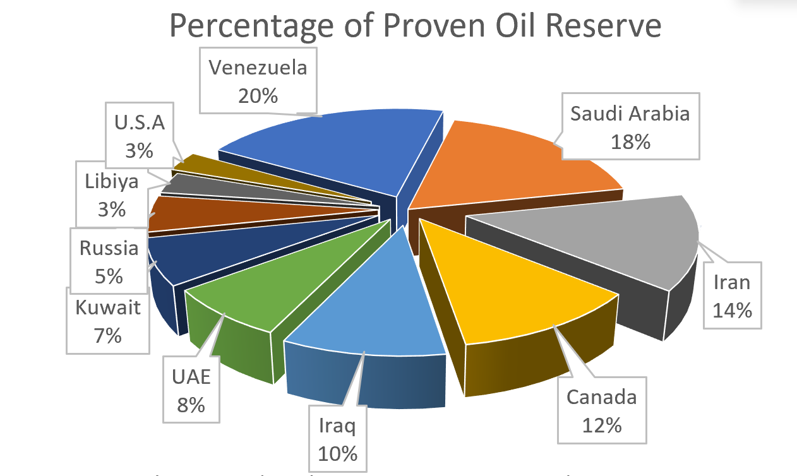
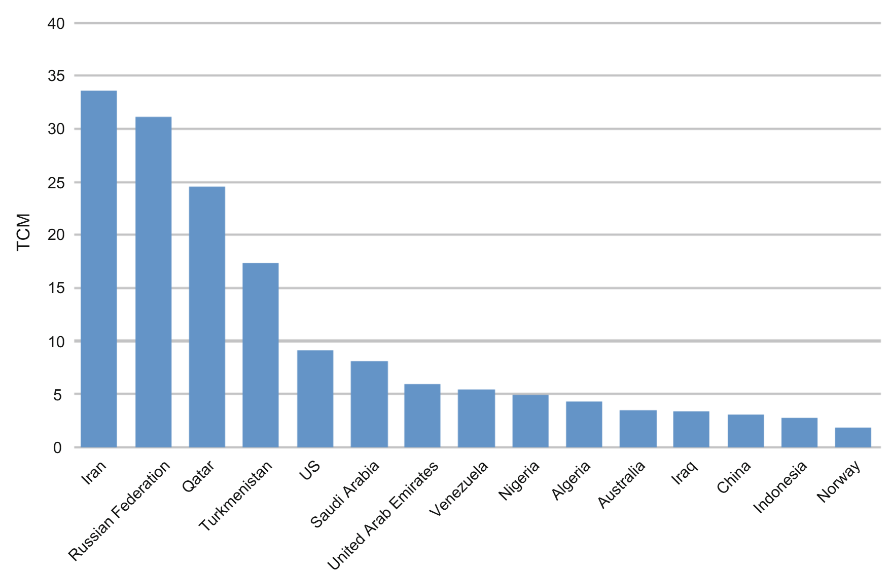

INTRODUCTION
The War which has started now is not because Trump thought lets bomb Iran and he started doing so, in last few decades no matter whoever was the president be it Joe Biden, Barac Obama, Bill Clinton they spent billions of dollars to tackle Iran in every possible way now the question arise is why is all these happening? Afterall the U.S. itself provided the nuclear technology to Iran and now U.S. itself is so desperate to remove this nuclear program from Iran that it is willing to go to any extent and while U.S. is attacking Iran why is Iran attacking Saudi Arabia, UAE, Qatar etc in retaliation. To understand this, we have to go back in time.
UNDERSTANDING THE ENERGY DYNAMICS


Now if we observe the pie chart of the proven crude oil reserve with respect to countries around the globe and the same for Natural Gas which is proven to be recoverable in the bar graph then we can see Iran is not any country in the West Asia, it is a major stakeholder of the energy of the whole world which can single handedly effect the supply demand of the whole world.
Now this reserve also existed in Iran in 1950s and the energy demand of the western countries were fulfilled by Iran back then to such extent that Iran provided 16%, 31% and 67% of the Crude Oil, Refined Products and Bunker Fuel. During this period the western countries made such political and diplomatic pressure on Iran that it signed such agreement in which the Land, Oil and Workers on ground belonged to Iran but most of the profit from it was acquired by Britain.
However, this unequal arrangement was directly challenged in 1951 when PM Mosaddegh came to power in Iran. Recognizing the immense exploitation, PM Mosaddegh declared that the land and its resources rightfully belonged to the people and subsequently nationalized the Iranian oil industry. His primary objective was to ensure that the actual profits from Iranian oil benefited the citizens of Iran rather than Western corporations.
While his intentions aimed at sovereignty, Mosaddegh severely underestimated the geopolitical backlash. The nationalization was an unacceptable financial blow to Britain. Concurrently, the U.S. was gripped by the fear that an alienated Mosaddegh might align Iran with the Soviet Union. To eliminate this threat, the CIA and Britain's MI6 orchestrated a covert mission known as "Operation Ajax". They successfully ousted the democratically elected Prime Minister, imprisoned him, and consolidated absolute power in the hands of Shah Mohammad Reza Pahlavi, a ruler who was entirely compliant with Western directives.
Overnight, Iran was transformed into a U.S. allied state where foreign policy and lucrative oil deals were heavily dictated by Washington. For the Iranian populace, this blatant interference was a massive humiliation. The U.S., which championed global democracy, had just toppled an elected leader to impose a pro-Western system. This deep-seated sense of betrayal birthed the enduring anti-American sentiments and the infamous "Death to America" slogans that are still prominent today. For the U.S., however, the public resentment was an acceptable consequence because Iran's strategic geographical location served as the ultimate buffer state, preventing the Soviet Union from accessing the oil-rich Middle East.
To fortify this crucial ally, the U.S. went out of its way to empower Iran technologically. This brings us back to the irony mentioned in the introduction: in 1957, the U.S. initiated the "Atoms for Peace" program, actively transferring foundational nuclear technology and its entire operational ecosystem directly to Iran. Washington helped establish the Tehran Nuclear Research centre, sent Iranian scientists to MIT, and equipped the nation for advanced medical research. The very same nuclear framework the U.S. now spends billions trying to dismantle was entirely seeded by Washington itself.
THE BIRTH OF THE PETRODOLLAR SYSTEM
To fully grasp the current energy dynamics and why the U.S. fiercely protects the Middle East, we must examine a monumental shift in the global economy. Prior to 1971, the U.S. Dollar was heavily backed by gold. However, as global trust waned and countries began demanding physical gold in exchange for their dollars, President Richard Nixon abruptly ended this convertibility in August 1971 an event known as the "Nixon Shock".
Fearing the dollar would lose its global dominance and devastate U.S. hegemony, Washington needed a new commodity to back its currency. They found it in the most universally essential resource i.e. crude oil. In 1974, the U.S. approached Saudi Arabia with a historic proposition. The U.S. demanded that Saudi Arabia sell its oil exclusively in U.S. dollars and invest those surplus dollars into U.S. treasury bonds. In exchange, the U.S. guaranteed absolute military protection and security for the Saudi royal family against any regional threats or internal uprisings.
Saudi Arabia agreed, and leveraging its immense influence within OPEC, convinced the rest of the oil-producing nations to adopt this exact policy by 1975. This masterstroke birthed the "Petrodollar" cycle. From then on, any country needing oil had to acquire U.S. dollars first, creating a permanent, artificial global demand for the currency. The continuous flow of petrodollars back into the U.S. economy funded its massive military expansion, which the U.S. in turn used to enforce this very system across the Middle East. Any leader who attempted to sell oil in other currencies such as Saddam Hussein proposing Euros or Muammar Gaddafi proposing a Gold-backed African currency quickly became a target of U.S. intervention.
This dollar-dominated energy system functioned flawlessly for the U.S., maintaining its uncontested influence in the region until the year 1979 introduced an unprecedented shock to the system.
THE 1979 REVOLUTION AND THE AXIS OF RESISTANCE
The U.S.-controlled system in the Middle East was operating flawlessly until the year 1979, when Washington experienced its most devastating geopolitical setback in the region. In Iran—the United States’ most trusted and powerful oil-producing ally—Ayatollah Khomeini led a massive popular revolution against the U.S.-backed Shah. The Iranian public, fuelled by decades of resentment over Western interference and the suppression of their elected leaders, successfully ousted the Shah and established an Islamic Republic.
The fury towards the West culminated in the storming of the U.S. Embassy, where American diplomats were taken hostage. In a single sweeping motion, the decades-long strategic grip the U.S. held over Iran was completely severed. Ayatollah Khomeini immediately halted all U.S.-led nuclear projects and made a declaration that terrified Washington and its regional allies: this revolution would not be contained within Iran's borders. Khomeini declared that the neighbouring Gulf rulers—such as those in Saudi Arabia—were corrupt U.S. puppets, and vowed to bring true Islamic rule to the broader Middle East.
From this moment, the primary goal of the United States shifted to regime change in Iran. However, because direct military invasion was nearly impossible due to Iran's immense size and deeply anti-American population, the U.S. sought an alternative route. In 1980, when the brutal Iran-Iraq war broke out, the U.S. heavily backed Iraqi dictator Saddam Hussein. Even when U.S. intelligence was fully aware that Saddam was deploying horrific chemical weapons against Iranian civilians—such as the Sardasht chemical attack—Washington continued to provide Iraq with billions of dollars and battle-planning assistance.
When Iran appealed to the United Nations and the global community regarding these illegal chemical attacks, their pleas were entirely ignored. This deafening silence from the world was a profound turning point for Iran’s leadership. It cemented the realization that U.S. hostility was permanent, the international community would not protect them, and their survival depended entirely on self-reliance.
While some within Iran argued that acquiring a nuclear weapon was the ultimate deterrent against the U.S., Ayatollah Khomeini strictly opposed it, decreeing that weapons of mass destruction violated Islamic principles. Consequently, the nuclear program remained largely dormant as long as he was alive.
However, the strategic calculus shifted upon Khomeini's death in 1989, when Ali Khamenei assumed power. Surrounded by U.S.-backed Arab monarchies and a hostile Israel, Iran recognized it could not win a conventional, head-to-head war against the United States. Instead, Iran developed a brilliant asymmetric military strategy known as "Forward Defence" or the "Axis of Resistance".
Rather than fighting directly, Iran began funding, arming, and training various decentralized militant groups across the Middle East who shared their opposition to Israel, U.S. influence, and corrupt Arab monarchies. By empowering groups like Hamas in Palestine, Hezbollah in Lebanon, and the Houthis in Yemen, Iran created a formidable network of proxies.
This strategy yielded a massive ideological victory. By positioning itself as the true defender of Palestine and the primary antagonist to Israel and Western imperialism, Iran bypassed the traditional Shia-Sunni religious divide. They garnered widespread sympathy from the broader "Muslim Ummah" (the global Muslim community), presenting themselves as the only state standing up for the oppressed.
This expanding influence terrified the royal families of Saudi Arabia and the UAE. Fearing that Iran might successfully incite revolutions within their own borders and overthrow their monarchies, these Gulf states clung even tighter to the United States. They pleaded for stronger security guarantees and actively motivated Washington to neutralize the Iranian threat before it was too late. Realizing that the stakes had never been higher, Iran's leadership made a fateful decision it was time to quietly restart the nuclear program the Americans had originally built for them.
THE NUCLEAR REVIVAL, SABOTAGE, AND SANCTIONS
To secure its survival, Iran began secretly reviving the very nuclear infrastructure the U.S. had provided during the Shah’s era. Prominent Iranian scientists, led by Mohsen Fakhrizadeh, were tasked with restarting the uranium enrichment programs at covert sites like Natanz and Arak. However, this secrecy was shattered in 2002 when the MEK, an Iranian opposition group, publicly exposed these facilities to the world.
To understand the panic this caused, one must understand the basics of uranium enrichment. Raw mined uranium consists of over 99% U-238 isotopes and less than 1% of the U-235 isotopes required for nuclear energy. The process of increasing this U-235 percentage is called "enrichment." If enriched to 3-5%, it can be used peacefully for electricity. However, if enriched to 90%, it becomes weapons-grade material for nuclear bombs. When the International Atomic Energy Agency (IAEA) investigated the exposed sites, they found traces of highly enriched uranium. Facing immense international pressure, Iran temporarily halted its program.
But geopolitical events soon forced Iran’s hand once again. The U.S. invaded Iraq, toppled Saddam Hussein, and subsequently labeled Iran as part of an "Axis of Evil". With the U.S. military occupying both neighboring Iraq and Afghanistan, Iran found itself completely encircled. Observing the global landscape, Iran learned a chilling lesson: countries on the U.S. hit list without nuclear weapons (like Iraq and Libya) face regime change, while countries with nuclear weapons (like North Korea) are left untouched.
Concluding that a nuclear deterrent was their only guarantee of survival, President Mahmoud Ahmadinejad canceled previous agreements and restarted enrichment deep inside the heavily fortified Fordo mountains.
For the United States, a nuclear-armed Iran was the ultimate nightmare scenario. If Iran successfully acquired a nuclear weapon, U.S. military threats would become obsolete. Without the fear of U.S. retaliation, Iran could freely sell its massive oil reserves in currencies other than the U.S. Dollar (like the Yuan or Yen), prompting other Gulf states to do the same. Furthermore, the U.S. security guarantees to Saudi Arabia and the UAE would become worthless paper if an untouchable, nuclear-armed Iran decided to aggressively export its revolution. Ultimately, a nuclear Iran threatened to instantly collapse the entire Petrodollar system that had sustained U.S. global dominance since 1974.
Unwilling to risk a direct military confrontation, the U.S. and Israel resorted to a highly sophisticated covert war. They engineered a malicious computer worm known as "Stuxnet" and unleashed it upon Iran’s nuclear facilities. The virus infiltrated the systems and caused the centrifuges to spin out of control until they destroyed themselves. Concurrently, key Iranian nuclear scientists—such as Massoud Alimohammadi, Majid Shahriari, and Mostafa Ahmadi Roshan—began dying in a series of mysterious assassinations and staged accidents.
Despite these severe setbacks, Iran relentlessly rebuilt its program in scattered, underground bunkers. Realizing that sabotage was not enough, President Barack Obama took a different approach in 2009: crushing economic warfare. Obama orchestrated severe international sanctions, effectively cutting Iran off from the global SWIFT payment system. Even with its massive reserves, Iran could not sell its oil. The Iranian economy nosedived; essential imports, including basic life-saving medicines and hospital anesthesia, became virtually impossible to procure because Iran had no way to process international payments.
Suffocated by these sanctions, Iran finally agreed to negotiate. In July 2015, in Vienna, the Joint Comprehensive Plan of Action (JCPOA) was signed. Under this landmark nuclear deal, Iran agreed to cap its uranium enrichment at 3.67% and permit 24/7 monitoring by IAEA inspectors in exchange for the lifting of the crippling economic sanctions.
For a brief moment, the crisis appeared to be resolved, and the region took a collective breath. But this peace would prove to be remarkably short-lived.
THE COLLAPSE OF THE JCPOA AND ESCALATING TENSIONS (2018–2025)
The fragile peace established by the 2015 nuclear deal was shattered just three years later. In 2018, Donald Trump assumed the U.S. presidency and immediately condemned President Obama’s JCPOA as a disastrous blunder. Trump argued that the agreement failed to restrict Iran’s ballistic missile program and contained flawed "sunset clauses" that would eventually expire, allowing Iran to legally expand its nuclear capabilities. Believing the deal merely bought Iran time to grow stronger, Trump unilaterally withdrew the United States from the JCPOA, instantly undoing years of diplomatic efforts.
The withdrawal plunged U.S.–Iran relations back into severe hostility. Iran rapidly began breaching the uranium enrichment limits set by the deal. Tensions climaxed when the U.S. assassinated Qasem Soleimani, Iran’s second most powerful figure, prompting Iran to launch retaliatory missile strikes on U.S. airbases. By the time Trump’s first term ended, Iran's uranium enrichment had skyrocketed from the agreed 3.67% to over 20%.
When President Joe Biden took office, attempts were made to revive the diplomatic deal. However, Iran demanded strict guarantees that no future U.S. president could unilaterally exit the agreement again—a promise Biden legally could not enforce. While delicate negotiations were underway in April 2021, a massive shockwave hit: Israel bombed Iran’s Natanz enrichment facility, destroying its advanced IR-6 centrifuges right in the middle of the peace talks.
Furious that it was being attacked while sitting at the negotiating table, Iran retaliated not with conventional weapons, but with atoms. Iran announced it would immediately enrich uranium to 60% as a penalty, warning it had the capability to reach the weapons-grade 90% if provoked further. By May 2021, the IAEA confirmed Iran had crossed this terrifying 60% threshold. As the international community condemned this move and passed resolutions against Tehran, Iran took the drastic step of blinding the IAEA—disconnecting the 24/7 monitoring cameras and online flow rate monitors at its nuclear sites, effectively cutting off the world's view of its progress.
By March 2023, the situation reached a critical boiling point. The IAEA reported that Iran’s nuclear program had advanced so far that its "breakout time" had shrunk to just 12 days. This meant Iran possessed the capability to bridge the gap from 60% to 90% weapons-grade enrichment in less than two weeks, even though weaponizing that material into a deliverable warhead would still take months of complex engineering.
The crisis escalated further when Donald Trump returned to the presidency in 2025. Taking an uncompromising stance, Trump issued a direct 60-day ultimatum to Ayatollah Ali Khamenei in March 2025: halt the enrichment program entirely or face severe military consequences. Subsequent negotiations in Oman stalled over Iran's absolute insistence on maintaining a 3–4% peaceful enrichment right, which Trump refused to allow.
When the ultimatum expired, the U.S. launched "Operation Midnight Hammer" on June 22, 2025. Utilizing B-2 stealth bombers, the U.S. unleashed a massive bombardment on Iran's primary nuclear facilities at Fordo, Natanz, Isfahan, and Karaj. Trump quickly declared the operation a total success, claiming the nuclear threat had been neutralized.
However, this victory was an illusion. IAEA and satellite reports later revealed that, anticipating the strike, Iran had secretly relocated and saved 200kg of its 60% enriched uranium using convoys of trucks just days before the bombing. Utilizing spare advanced centrifuges they had kept hidden, Iranian scientists simply moved their operations to deeper underground compounds and immediately resumed their work.
Adding to the chaos of 2025, massive anti-government protests erupted across 17 Iranian provinces in December. When the Iranian regime shut down the internet to quell the uprising, protesters utilized thousands of smuggled Starlink terminals to coordinate. Iran brutally suppressed the rebellion, resulting in over 5,000 deaths, while directly blaming U.S. and Israeli intelligence for funding and inciting the unrest to force a regime change from within. The failure of diplomacy, military strikes, and internal protests set the stage for an unprecedented and devastating regional war.
THE 2026 ESCALATION AND OPERATION EPIC FURY
Despite the failure of previous strikes, the diplomatic channels briefly reopened in the current year. On February 6, 2026, negotiations resumed in Oman. Surprisingly, the talks showed immense promise. Iran displayed a willingness to compromise, accepting the U.S.'s maximum demands, and international media began reporting that a historic breakthrough was imminent.
However, this optimism was a smokescreen. On the night of February 28, 2026, right in the middle of these ongoing discussions, President Trump abruptly launched "Operation Epic Fury". In a devastating 24-hour window, the U.S. executed over 1,000 airstrikes across Iran. Utilizing precise intelligence that Iran's top leadership was gathering in Tehran, the U.S. successfully assassinated Supreme Leader Ali Khamenei, the Defense Minister, and top IRGC commanders in a single decapitation strike.
The U.S. calculation was straightforward: eliminate the head of the snake, and the aging Iranian regime will fracture, allowing opposition groups to rise up and negotiate a surrender. But Washington had fatally miscalculated. Learning from how the U.S. toppled Saddam Hussein's centralized command in Iraq, Iran had implemented a failsafe known as the "Mosaic Doctrine". In the event that central communications or top leadership were wiped out, Iran’s military was already pre-divided into 31 independent provincial commands. Each provincial commander was authorized to act autonomously to sustain the war.
Instead of collapsing, the Iranian military apparatus went on autopilot, initiating a massive, coordinated retaliation that caught the U.S. entirely off guard. Iran expanded the theater of war beyond Israel, directly targeting the Gulf nations hosting U.S. military bases—Saudi Arabia, Kuwait, Qatar, and the UAE.
IRAN'S ASYMMETRIC ADVANTAGES: GEOGRAPHY AND ECONOMICS
Despite the United States' overwhelming technological and financial superiority, Iran possesses geographic and asymmetric advantages that make it nearly impossible to defeat conventionally.
First is geography. Iran is flanked by natural fortress walls—the Zagros Mountains in the west and the Alborz Mountains in the north. Iran has spent decades excavating these mountain ranges to build elaborate underground "missile cities," rendering U.S. radar tracking nearly useless. From behind the Zagros Mountains, Iran can easily launch strikes into the Gulf countries and vanish, while ground invasions into these mountains are historically disastrous. Furthermore, Iran’s sheer landmass four times the size of Iraq—allows it to absorb massive U.S. bombardments without crippling the entire nation. In contrast, Israel’s compact geography means a single Iranian missile penetrating their airspace can cause devastating damage to dense urban corridors like Tel Aviv and Jerusalem.
Second is the economics of asymmetric warfare. Iran is employing swarm tactics using incredibly cheap drones, costing roughly $20,000 each. To stop them, the U.S. and Israel are forced to fire Patriot and THAAD interceptor missiles, which cost between $4 million to $15 million per shot. In one instance, a swarm of cheap Iranian drones successfully destroyed an advanced U.S. AN/TPY-2 radar system worth $300 million. Iran is systematically bankrupting the U.S. defence shield by forcing them to spend millions to shoot down thousands.
THE ULTIMATE CHOKEPOINT: THE STRAIT OF HORMUZ
However, Iran’s most devastating weapon is not a missile, but a 33-kilometer stretch of water: the Strait of Hormuz. Roughly 20% of the world’s crude oil passes through this narrow maritime chokepoint. By essentially "sitting" on the strait and threatening passing vessels, Iran has caused maritime insurance companies to either skyrocket their premiums or refuse coverage entirely, effectively paralyzing the flow of oil.
This maneuver is a direct dagger to the heart of the U.S. Petrodollar system. By halting the sale of Gulf oil, Iran chokes the flow of dollars being reinvested into the U.S. economy—the very funds the U.S. uses to sustain its military power.
Furthermore, Iran has weaponized the Gulf states' vulnerabilities to trap the United States. Iran has made it clear: because the U.S. is launching attacks from bases inside Gulf countries, those countries are now legitimate targets. The Gulf states are inherently fragile. They rely on the Strait of Hormuz for 90% of their food imports. More critically, 60% of their drinking water comes from highly exposed coastal desalination plants. Iran has subtly threatened that a single cheap drone striking these plants could leave entire Gulf nations without drinking water for the months it would take to rebuild them.
Terrified of this prospect, the Gulf nations are now realizing that the U.S. military bases on their soil intended to guarantee their security are the very reason they are being targeted.
CONCLUSION
Today, the U.S. finds itself in an impossible dilemma. The traditional strategy of declaring a superficial victory and withdrawing is no longer viable because Iran controls the Strait of Hormuz and refuses to reopen it until its demands including war reparations and the lifting of sanctions are met.
If the U.S. abandons the Gulf states now, its global security guarantees will lose all credibility, leading to the rapid collapse of the Petrodollar system. Meanwhile, the conflict threatens to escalate even further. Discussions are emerging about potential attacks on vital submarine internet cables running beneath the Red Sea, which would paralyze global banking and communications. With immense pressure from domestic lobbies demanding stronger action, the U.S. is inching closer to putting boots on the ground or worse, a nuclear confrontation.
The current U.S.–Iran conflict is not a sudden flare-up, but the climax of a 70-year geopolitical chess match over energy dominance, sovereign rights, and the survival of the global economic order.